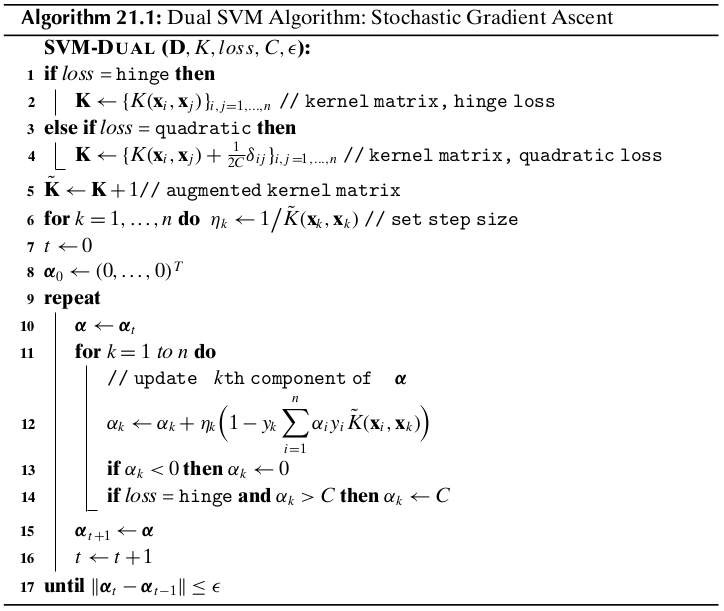

Chapter 21 Support Vector Machines¶
The goal of Support Vector Machines (SVMs) is to find the optimal hyperplane that maximizes the gap or margin between the classes.
21.1 Support Vectors and Margins¶
Let \(\D\) be a classification dataset, with \(n\) points \(\x_i\) in a \(d\)-dimensional space. Let us assume that there are only two class labels, that is, \(y_i\in\{+1,-1\}\), denoting the positive and negative classes.
Hyperplane
A hyperplane in \(d\) dimensions is given as the set of all points \(\x\in\R^d\) that satisfy the equation \(h(\x)=0\), where \(h(\x)\) is the hyperplane function, defined as follows:
\(\w\) is a \(d\) dimeniosnal weight vector and \(b\) is a scalar, called the bias. For points that lie on the hyperplane, we have
The hyperplane is thus defined as the set of all points such that \(\w^T\x=-b\).
Separating Hyperplane
A hyperplane splits the original \(d\)-dimensional space into two half-spaces. A dataset is said to be linearly separable if each half-space has points only from a single class. The hyperplane function \(h(\x)\) serves as a linear classifier or a linear discriminant, which predicts the class \(y\) for any given point \(\x\), according to the decision rule:
Distance of a Point to the Hyperplane
Consider a point \(\x\in\R^d\), such that \(\x\) does not lie on the hyperplane. Let \(\x_p\) be the orthogonal projection of \(\x\) on the hyperplane, and let \(\r=\x-\x_p\), then
wherer \(r\) is the directed distance of the point \(\x\) from \(\x_p\), that is, \(r\) gives the offset of \(\x\) from \(\x_p\) in terms of the unit weight vector \(\frac{\w}{\lv\w\rv}\).
Using the result above, we obtain an expression for the directed distance of a point to the hyperplane:
To obatain distance, which must be non-negative, we can conveniently multiply \(r\) by the class label \(y\) of the point.
Note
\(\dp\delta=yr=\frac{yh(\x)}{\lv\w\rv}\)
In particular, for the origin \(\x=\0\), the directed distance is
Margin and Support Vectors of a Hyperplane
Over all the \(n\) points, we define the margin of the linear classifier as the minimum distance of a point from the separating hyperplane, given as
Note
\(\dp\delta^*=\min_{\x_i}\bigg\{\frac{y_i(\w^T\w_i+b)}{\lv\w\rv}\bigg\}\).
Note that \(\delta^*\ne 0\), since \(h(\x)\) is assumed to be a separating hyperplane.
All the points (or vectors) that achieve this minimum distance are called support vectors for the hyperplane. In other words, a support vector \(\x^*\) is a point that lies precisely on the margin of the classifier, and thus satisfies the condition
Canonical Hyperplane
To obtain the unique or canonical hyperplane, we choose the scalar \(s\) such that the absolute distance of a support vector from the hyperplane is 1.
which implies
Henceforth, we will assume that any separating hyperplane is canonical. That is, it has already been suitably rescaled so that \(y^*h(\x^*)=1\) for a support vector \(\x^*\), and the margin is given as
Note
\(y_i(\w^T\x_i+b)\geq 1\), for all points \(\x_i\in\D\).
21.2 SVM: Linear and Separable Case¶
Let us assume for the moment that the points are linearly separable, that is, there exists a separating hyperplane that perfectly classifies each point.
Maximum Margin Hyperplane
The fundamental idea behind SVMs is to choose the canonical hyperplane, specified by the weight vector \(\w\) and the bias \(b\), that yields the maximum margin among all possible separating hyperplanes. If \(\delta_h^*\) represents the margin for hyperplane \(h(\x)=0\), then the goal is to find the optimal hyperplane \(h^*\):
The SVM task is to find the hyperplane that maximizes the margin \(\frac{1}{\lv\w\rv}\), subject to the \(n\) constraints, \(\y_i(\w^T\x_i+b)\geq 1\), for all points \(\x_i\in\D\). Instead of maximizing the margin \(\frac{1}{\lv\w\rv}\), we can minimize \(\lv\w\rv\).
Note
Objective Functions: \(\dp\min_{\w,b}\bigg\{\frac{\lv\w\rv^2}{2}\bigg\}\)
Linear Constraints: \(y_i(\w^T\x_i+b)\geq 1,\forall\x_i\in\D\)
We can solve the dual problem via the use of Lagrange multipliers. The main idea is to introduce a Lagrange multiplier \(\alpha_i\) for each constraint, which satisfies the Karush-Kuhn-Tucker (KKT) conditions at the optimal solution:
Incorporating all the \(n\) constraints, the new objective function, called the Lagrangian, then becomes
\(L\) should be minimized with respect to \(\w\) and \(b\), and it should be maximized with respect to \(\alpha_i\).
We obtain the dual Lagrangian objective funtion, which is specified purely in terms of the lagrange multipliers:
Note
Objective Function: \(\dp\max_{\bs{\alpha}}L_{dual}=\sum_{i=1}^n\alpha_i\) \(\dp-\frac{1}{2}\sum_{i=1}^n\sum_{j=1}^n\alpha_i\alpha_jy_iy_j\x_i^Y\x_j\)
Linear Constraints: \(\alpha_i\geq 0,\forall i\in\D\) and \(\dp\sum_{i=1}^n\alpha_iy_i=0\)
Weight Vector and Bias
According to the KKT conditions, we have
which gives rise to two cases:
\(\alpha_i=0\), or
\(y_i(\w^T\x_i+b)-1=0\), which implies \(y_i(\w^T\x_i+b)=1\).
Note
\(\dp\w=\sum_{\alpha_i>0}\alpha_iy_i\x_i\)
Note
\(\dp b_i=\frac{1}{y_i}-\w^T\x_i=y_i-\w^T\x_i\)
Note
\(\dp b=\rm{avg}_{\alpha_i>0}\{b_i\}\)
SVM Classifier
Note
\(\hat{y}=\rm{sign}(h(\z))=\rm{sign}(\w^T\z+b)\)
Soft Margin SVM: Linear and Nonseparable Case
Here we consider the case where the classes overlap to some extent so that a perfect separation is not possible.
SVM can handle non-separable points by introducing slack variable \(\xi_i\) as follows:
Note
\(y_i(\w^T\x_i+b)\geq 1-\xi_i\)
where \(\xi_i\geq 0\) is the slack variable for point \(\x_i\), which indicates how much the point violates the separability condition, that is, the point may no longer be at least \(1/\lv\w\rv\) away from the hyperplane. The slack values indicate three types of point. If \(\xi_i=0\), then the corresponding point \(\x_i\) is at least \(\frac{1}{\lv\w\rv}\) away from the hyperplane. If \(0<\xi_i<1\), then the point is within the margin and still correctly classified, that is, it is on the correct side of the hyperplane. However, if \(\xi\geq 1\) then the point is misclassified and appears on the wrong side of the hyperplane.
In the nonseparable case, also called the soft margin case, the goal of SVM classification is to find the hyperplane iwth maximum margin that also minimizes the slack terms. The new objective function is given as
Note
Objective Function: \(\dp\min_{\w,b,\xi_i}\bigg\{\frac{\lv\w\rv^2}{w}+C\sum_{i=1}^n(\xi_i)^k\bigg\}\)
Linear Constraints: \(y_i(\w^T\x_i+b)\geq 1-\xi_i,\forall\x_i\in\D\quad\xi_i\geq 0,\forall\x_i\in\D\)
where \(C\) and \(k\) are constants that incorporate the cost of misclassification. The term \(\sum_{i=1}^n(\xi_i)^k\) gives the loss, that is, an estimate of the deviation from the separable case. The scalar \(C\geq 0\), which is chosen empirically, is a regularization constant that controls the trade-off between maximizing the margin or minimizing the loss. The constant \(k>0\) governs the form of the loss. Typically \(k\) is set to 1 or 2. When \(k=1\), called hinge loss, the goal is to minimize the sum of the slack variables, whereas when \(k=2\), called quadratic loss, the goal is to minimize the sum of the squared slack variables.
21.3.1 Hinge Loss¶
The Lagrangian is then given as
Note
Objective Function: \(\dp\max_{\bs{\alpha}}L_{dual}=\sum_{i=1}^n\alpha_i\) \(\dp-\frac{1}{2}\sum_{i=1}^n\sum_{j=1}^n\alpha_i\alpha_jy_iy_j\x_i^T\x_j\)
Lienar Constraints: \(0\leq\alpha_i\leq C,\forall i\in\D\) and \(\dp\sum_{i=1}^n\alpha_iy_i=0\)
Weight Vector and Bias
Once we solve for \(\alpha_i\), we have \(\alpha_i=0\) for points that are not support vectors, and \(\alpha_i>0\) only for the support vectors, which comprise all points \(\x_i\) for which we have
Notice that the support vectors now include all points that are on the margin, which have zero slack, as well as all points with postivie slack.
For the support vectors with \(\alpha_i>0\), we have two cases to consider:
\(\xi_i>0\), which implies that \(C-\alpha_i=0\), that is, \(\alpha_i=C\), or`
\(C-\alpha_i>0\), that is \(\alpha_i<C\). In this case, we must have \(\xi_i=0\). In other words, these are precisely those support vectors that are on the margin.
To obtain the final bias \(b\), we can take the average over all the \(b_i\) values.
21.3.2 Quadratic Loss¶
In this case we can drop the positivity constraint \(\xi_i\geq 0\) due to the fact that (1) the sum of the slack terms \(\sum_{i=1}^n\xi_i^2\) is always positive, and (2) a potential negative value of slack will be ruled out during optimization because a choice of \(\xi_i=0\) leads to a smaller value of the primary objective, and it still satisfies the constraint \(y_i(\w^T\x_i+b)\geq 1-\xi_i\) whenever \(\xi<0\).
Note
Objective Function: \(\dp\min_{\w,b,\xi_i}\bigg\{\frac{\lv\w\rv^2}{2}+C\sum_{i=1}^n\xi_i^2\bigg\}\)
Linear Constraints: \(y_i(\w^T\x_i+b)\geq 1-\xi_i,\forall\x_i\in\D\)
where \(\delta\) is the Kronecker delta function, defined as \(\delta_{ij}=1\) if \(i=j\), and \(\delta_{ij}=0\) otherwise.
Thus, the dual objective is given as
Note
\(\max_{\bs{\alpha}}=\sum_{i=1}^n\alpha_i-\frac{1}{2}\sum_{i=1}^n\sum_{j=1}^n\alpha_i\alpha_jy_iy_j\) \(\dp\bigg(\x_i^T\x_j+\frac{1}{2C}\delta_{ij}\bigg)\)
subject to the constraints \(\alpha_i\geq 0,\forall i\in\D\), and \(\dp\sum_{i=1}^n\alpha_iy_i=0\)
21.4 Kernel SVM: Nonliear Case¶
To apply the kernel trick for nonlinear SVM classification, we have to show that all operations require only the kernel function:
Let \(\D\) be the original dataset with \(n\) points \(\x_i\) and their labels \(y_i\). Applying \(\phi\) to each point, we can obtain the new dataset \(\D_\phi\) in the feature space comprising the transformed points \(\phi(\x_i)\) along with their labels \(y_i\), for \(i=1,2,\cds,n\).
Note
Objective Function: \(\dp\min_{\w,\b,\xi_i}\bigg\{\frac{\lv\w\rv^2}{2}+C\sum_{i=1}^n(\xi_i)^k\bigg\}\)
Linear Constraints: \(y_i(\w^T\phi(\x_i)+b)\geq 1-\xi_i\), and \(\xi_i\geq 0,\forall\x_i\in\D\).
Hinge Loss
Subject to the constraints that \(0\leq\alpha_i\leq C\), and \(\sum_{i=1}^n\alpha_i y_i=0\).
Quadratic Loss
Define a new kernel function \(K_q\), as follows:
which affects only the diagonal entries of the kernel matrix \(\K\), as \(\delta_{ij}=1\) iff \(i=j\), and zero otherwise. Thus, the dual Lagrangian is given as
subject to the constraints that \(\alpha_i\geq 0\), and \(\sum_{i=1}^n\alpha_iy_i=0\).
Weight Vector and Bias
For hinge loss:
For quadratic loss:
Kernel SVM Classifier
Note
\(\dp\hat{y}=\rm{sign}\bigg(\sum_{\alpha_i>0}\alpha_iy_iK(\x_i,\z)+b\bigg)\)
21.5 SVM Training: Stochastic Gradient Ascent¶
Instead of dealing explicitly with the bias \(b\), we map each point \(\x_i\in\R^d\) to the augmented point \(\td{\x_i}\in\R^{d+1}\) by adding 1 as an additional column value, so that
Furthermore, we also map the weight vector \(\w\in\R^d\) to an augmented weight vector \(\td{\w}\in\R^{d+1}\), with \(w_{d+1}=b\). That is
The equation of the hyperplane is then given as follows:
The new set of constraints is given as
Note
Objective Function: \(\min_{\td{\w},\xi_i}\) \(\dp\bigg\{\frac{\lv\td{\w}\rv^2}{2}+C\sum_{i=1}^n(\xi_i)^k\bigg\}\)
Linear Constraints: \(y_i\td{\w}^T\td{\w}\geq 1-\xi_i\) and \(\xi_i\geq 0,\forall i=1,2,\cds,n\)
The Lagrangian for the hinge loss is given as
We can generalize the dual objective to the nonlinear case by replacing \(\td{\x_i}^T\td{\x_j}\) with the augmented kernel value
The augmented kernel value is therefore given as
Note
Objective Function: \(\dp\max_{\bs{\alpha}}J(\bs{\alpha})=\sum_{i=1}^n\alpha_i\) \(\dp-\frac{1}{2}\sum_{i=1}^n\sum_{j=1}^n\alpha_i\alpha_jy_iy_j\td{K}(\x_i,\x_j)\)
Linear Constraints: \(0\leq\alpha_i\leq C,\forall i=1,2,\cds,n\)
21.5.1 Dual Solution: Stochastic Gradient Ascent¶
where the \(k\)th component of the gradient is obtained by differentiating \(J(\alpha_k)\) with respect to \(\alpha_k\):
Starting from an initial \(\bs{\alpha}\), the gradient ascent approach successively updates it as follows:
The update rule for the \(k\)th component is given as
We also have to ensure that the constraints \(\alpha_k\in[0,C]\) are satisfied. Thus, in the update step above, if \(\alpha_k<0\) we reset it to \(\alpha_k=0\), and if \(\alpha_k>C\) we reset it to \(\alpha_k=C\).
The method successively updates \(\bs{\alpha}\) and stops when the change falls below a given threshold \(\epsilon\). The computational complexity of the method is \(O(n^2)\) per iteration.
Testing
Note
\(\hat{y}=\rm{sign}(h(\td\phi(\z)))=\rm{sign}(\td\w^T\td\phi(\z))=\) \(\dp\rm{sign}\bigg(\sum_{\alpha_i>0}\alpha_iy_i\td{K}(\x_i,\z)\bigg)\)